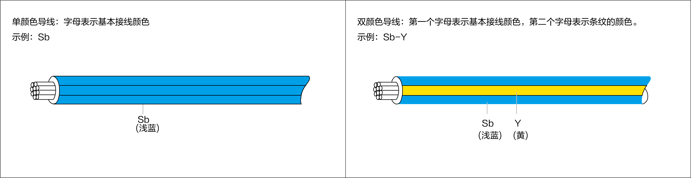
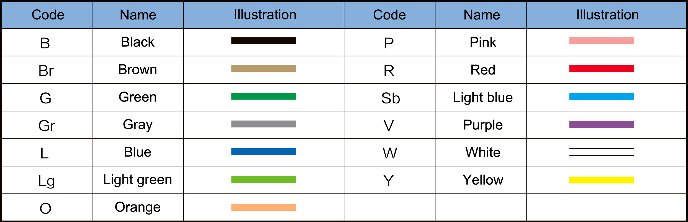
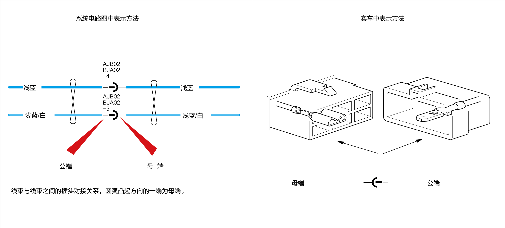
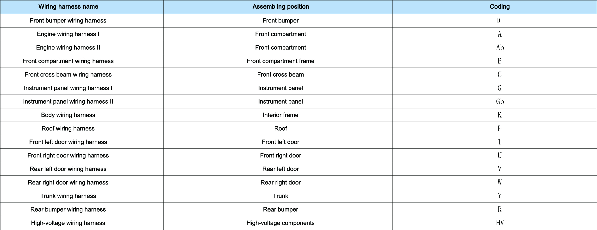

Description of Diagram
Description of system circuit diagram
[A] Identification of power supply system
It is used to indicate the position of ignition key when the fuse is supplied with power. The line code "30" indicates the main live wire, which is generally provided by front compartment fuse box or instrument panel fuse box (refer to the power circuit diagram for details). IG1, IG3 and IG4 are live wires when the Start/Stop switch is in ON or START position (refer to power circuit diagram for details);
[B] Fuse
It indicates the name and current of fuse;
-
The fuses of front compartment fuse box UEC are numbered as F1/X according to their corresponding positions, where F indicates the fuse code, 1 indicates that the fuse is installed in the front compartment fuse box, and X indicates the serial number. For example, F1/03 indicates the No. 3 fuse installed in the front compartment fuse box.
-
The fuses of instrument panel fuse box IEC are numbered as F2/X according to their corresponding positions, where F indicates the fuse code, 2 indicates that the fuse is installed in the instrument panel fuse box, and X indicates the serial number. For example, F2/03 indicates the No. 3 fuse installed in the instrument panel fuse box.

-
If a fuse is blown, be sure to identify the fault cause before replacement;
-
Be sure to use fuses specified by the OEM. Do not use a fuse whose current rating exceeds that specified by the OEM;
-
Do not partially insert a fuse. Make sure that the fuse is properly inserted into the fuse holder.
[C] Wire color and diameter
-
Wire color: It indicates the color of wires, which is represented by letter code. The wires can be divided into single-color and multi-color wires, as shown in the figure below;

Refer to the following table for wire color and code:

-
Wire diameter: 0.5 indicates that the cross-sectional area of the wire is 0.5 mm2.
[D] Relay
-
The relays of front compartment fuse box UEC are numbered as K1/X according to their corresponding positions, where K1 indicates the code of front compartment fuse box relay, and X indicates the serial number. For example, No. X relay installed in the front compartment fuse box is indicated by K1/1, K1/2...
-
The relays of instrument panel fuse box IEC are numbered as K2/X according to their corresponding positions, where K2 indicates the code of instrument panel fuse box relay, and X indicates the serial number. For example, No. X relay installed in the instrument panel fuse box is indicated by K2/1, K2/2...
[E] Hinge point
It indicates that two or more wires are hinged together, and the code indicates the hinge point.
[F] Butt plug
-
It indicates the connector between wiring harnesses. For example, BJA02 AJB02-4 indicates that front compartment and engine wiring harnesses are connected, where front compartment wiring harness BJA02 indicates the female terminal, engine wiring harness AJB02 indicates the male terminal, and -4 indicates No. 4 pin of this butt plug, as shown in the figure below:

[G] Component symbol
Refer to the symbol description of circuit diagram for details of internal schematic diagram of components.
[H] Terminal code and pin
-
Terminal code: It refers to the terminal code of connected components, for example, B14-3, where B indicates the wiring harness corresponding to the component connector, and 14 indicates the serial number of the wiring harness connector. Codes can be used for distinguishing when multiple coded connectors are connected to components or when there are multiple models of connectors with different specifications or configurations. For example, codes for terminals of the left domain control unit include BG64(B), BG64(C) and KG64(E);
-
See the following table for codes of wiring harnesses:

[I] Fuse box
-
This vehicle is equipped with two fuse boxes, namely front compartment and instrument panel fuse boxes. Please refer to the information of fuse boxes and relevant circuit diagrams for details.
[J] Terminal definition
-
It is used to describe the function or description of this terminal.
[K] Go to the next end
-
It indicates that the wire is connected to this component, and relevant information can also be obtained by querying relevant circuit diagram of this component.
[L] GND point
-
Eb09: E indicates the code of a GND point, and b indicates the wiring harness connected to the GND point. The code is a lowercase letter code of the wiring harness, and 09 indicates the serial number of the wiring harness GND point;
[M] Go to another system circuit diagram
-
This part of the content jumps to another system circuit diagram, in which more details can be viewed.
[N] Twisted pair
-
Definition: It refers to a kind of general wire made by winding two mutually insulated wires together according to certain specifications;
-
Function: It is used to prevent external electromagnetic interference and reduce the external interference of its own signal.
-
Representation:
[O] Shielded wire
-
It refers to a transmission line in which the signal wire is wrapped with a metal mesh braided layer. Its shielding layer needs to be grounded, and external interference signals can be led into the GND position.